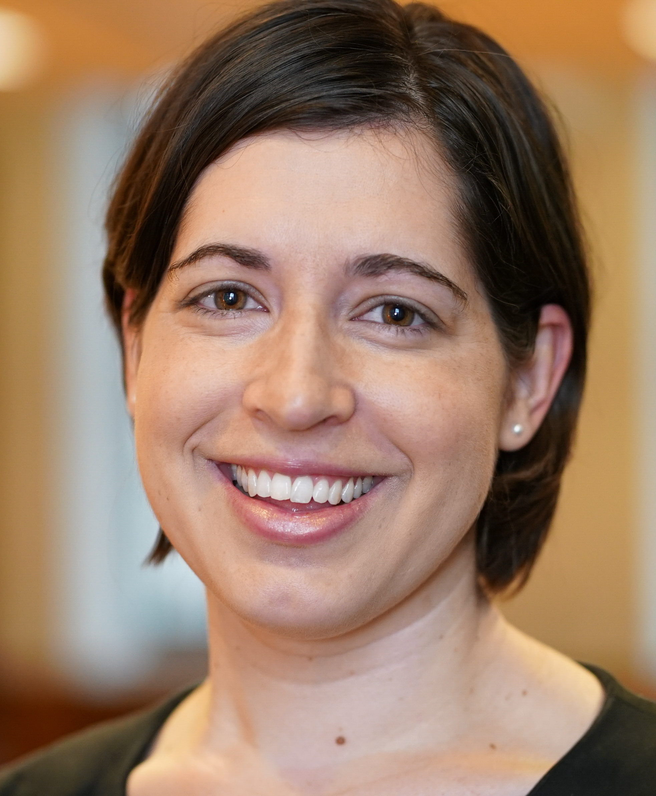

About Me
As the Impact and Evaluation Librarian at Galter Health Sciences Library at Northwestern University, Karen supports individuals and groups in their understanding, assessment, visualization, and reporting of impactful outcomes of research and clinical care efforts. Karen was a U.S. National Library of Medicine Associate Fellow where she completed the second year of the fellowship program through her work with the Bernard Becker Medical Library at Washington University in St. Louis. She is interested in providing information support to basic science researchers and graduate students. She also is learning more about how to evaluate and visualize research impact using bibliometric data. Karen received her MS degree in Library Science in 2012 from the University of North Texas with an emphasis in Health Informatics. While completing her degree she worked as a research assistant with the National Children’s Study, which is the largest study of children’s health in the U.S. She was a recipient of the Medical Library Association scholarship and she completed an internship with the University of Houston’s digital library. Her background includes teaching biology and English in Liptovsky Mikulas, Slovakia and receiving a Masters of Arts degree in Educational Leadership from Luther Seminary in St. Paul, MN. Karen received her undergraduate degree in Biological Sciences from South Dakota State University.